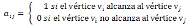

Sea G=(V,E) grafo dirigido o grafo no dirigido:
Se dice que el vértice u alcanza al vértice v en G si u=v o existe una cadena de u a v.
Se entiende por tanto que cada vértice se alcanza a sí mismo.
La matriz de acceso de G es la matriz nxn A=aij, donde:

Todos los elementos de la diagonal principal de la matriz valen 1 (cada vértice se alcanza a sí mismo).
Sea G=(V,E) grafo
La matriz de acceso de G se puede obtener a partir de la aplicación reiterada de los conocidos métodos:
Concretamente, cada una de las filas, i, i = 1, 2, .... , n, de la matriz de acceso se obtiene por aplicación de uno de los dos métodos mencionados al vértice vi. En el caso de grafos no dirigidos, dado que si u alcanza a v entonces v alcanza a u, bastará con: aplicar el algoritmo a un vértice cualquiera y después ir aplicando reiteradamente el algoritmo a vértices que no hayan aparecido como alcanzados en iteraciones anteriores.
Los algoritmos sirven tanto para grafos dirigidos como grafos no dirigidos.
Sea G=(V,E) grafo. Considera un vértice de G, v.
1. Crea dos listas vacías L y A, y una cola vacía Q.
2. Elige un vértice v, añádelo a L y añade a la cola Q todos los v’ tal que (v, v’) existe en E
3. Elimina de Q su primer elemento w, añádelo a L (al final) y añade a Q todos los vértices w’ tales que (w,w’) existe en E y que no estén en L ni en Q.
4. Añade a A una arista (w0 ,w) donde w0 es el primer vértice de L tal que (w0 ,w) existe en E
5. Repite los pasos 3 y 4 hasta que Q sea vacía.